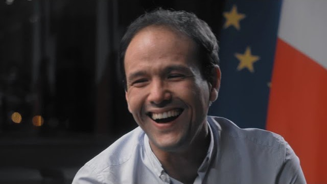

The game is changing
Gender equality is fueling discussions everywhere. General awareness is everything - and yes, it's happening. And yet we say: it's not enough.

Gender equality is fueling discussions everywhere. General awareness is everything - and yes, it's happening. And yet we say: it's not enough.
Europe is entering a new technology cycle across space, industrial infrastructure, AI, health and climate. World-class science and engineering talent are converging with a new generation of globally ambitious founders. SISTAFUND was built to identify those founders early.
Diversity is not a sector. It is part of our sourcing advantage. We back women and gender-balanced teams building the technologies Europe will need next. We believe the persistent funding gap creates a structural sourcing opportunity: exceptional founders remain overlooked by traditional venture capital.

We're taking a stand - answering female entrepreneurs' calls everywhere. We're taking action - we have raised the largest European 70m€ gender-lens VC fund, backing companies founded by women and gender-balanced teams. We're partnering with them, in France, Europe and the U.S. From 0 to 1. And millions.
Our purpose is to help write new stories and create value - simply. Their vision will be our gender-balanced horizon.
Together, we have created a community of exceptional and committed talents : entrepreneurs, partners, best-in-class experts. Together, we challenge the status quo. Together, we knock down yesterday's biases - reshaping the world in 4 key areas: Deeptech, HealthTech, Climate, and AI & Enterprise Software.

Identify exceptional founders early and help them build global category leaders from Europe to the world. Ours is a focused, multi-sector strategy, built around Europe's most consequential technology markets.
SISTAFUND is deeply connected to the SISTA NGO, first of all through Tatiana, who was the initiator of both SISTA and SISTAFUND. Since 2018, SISTA has been on a mission to bring forth a generation of diverse leaders by reducing the funding gap between female and male entrepreneurs. Some of SISTA's actions consist of supporting and federating entrepreneurs, but also of producing data to shed light on the reasons for this funding gap. This film, made with Mirova Forward, turns the questions usually put to women onto the men who are rarely asked them.
